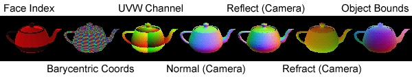
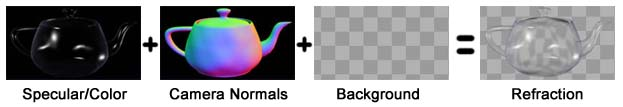
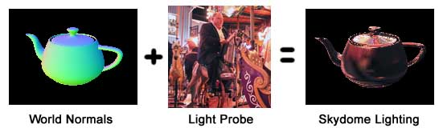

InfoTexture
Shade the surface according to various surface properties.

General Tips:
This texture is intended to be used to render passes of a scene that will later be used in a compositing program or post-process script. The colors returned by this texture are very sensitive to the scene settings, and many things can throw off the returned colors. The following is a list of common gotchas:
- Any lights or shading in the scene will cause the returned values to be invalid. The best way to set up your scene is to assign this texture to a fully self-illuminated material, and turn off any lights in the scene. Note: if you have no lights in the scene, the 3dsmax scanline renderer will render with default lighting. To get around this, manually create a single light, and turn it off.
- Antialiasing/motion blur/depth of field will also invalidate the colors created by InfoTexture. For certain uses (ie. using a Normal pass to create post-processed distortion effects), this is acceptible.
- Anything else that alters the color of the final image/material will also cause problems. This includes specular values, atmospheric effects, render effects, and ambient lighting.
- Saving your renderings to certain file formats will throw off the values of the texture. The default Targa IO plugin is an example of such a format. This is especially bad for the Face Index mode. In this case, use the TIF format in 8-bit mode instead.
Back To Top...
Parameters:
- Info Type
-
The Info Type lets you choose what info is used to shade the surface.
NOTE: MaxScript access to this parameter is through an interface. Running ShowInterfaces InfoTexture will show how to get/set this property.
- Face Index
-
This mode encodes the face index of the rendered mesh into a 24-bit color. For any given pixel, you can get the face index under that pixel using this function:
fn GetFaceIndexFromColor color =
(
(color.r + (bit.Shift color.g 8) + (bit.Shift color.b 16) + 1) as Integer
)
- Barycentric Coordinates
-
The barycentric coordinates of the rendered face. You can get a position on the mesh using the barycentric coordinates like this:
fn GetPointOnFace myMesh faceIndex baryCoordColor =
(
local baryCoord = Point3 (baryCoordColor.r/255.0) (baryCoordColor.g/255.0) (baryCoordColor.b/255.0)
local faceVerts = GetFace myMesh faceIndex
local v1 = GetVert myMesh faceVerts[1]
local v2 = GetVert myMesh faceVerts[2]
local v3 = GetVert myMesh faceVerts[3]
v1 * baryCoord.x + v2 * baryCoord.y + v3 * baryCoord.z
)
- UVW Coordinates
-
Simply shows the UVW coordinates of the surface. The UVW Channel and Wrap Mode options become available with this type.
- Normal
-
Shows the interpolated/smoothed surface normal. You can show the normal in one of the following coordinate systems:
- Reflect Vector
-
Encodes the reflection of the view vector about the surface normal vector.
RGB corresponds to XYZ, with a color value of 0 representing -1.0, 255 representing +1.0, and 127.5 representing 0.0 for component.
- Refract Vector
-
Encodes the refraction of the view vector about the surface normal vector. Uses the current IOR setting of the material.
RGB corresponds to XYZ, with a value of 0 representing -1.0, 255 representing +1.0, and 127.5 representing 0.0 for component.
- Object Bounding Box
-
Encodes the object space position of the surface. RGB[0,0,0] is at the "lower left front" corner of the object bounding box, and RGB[255,255,255] is at the "upper right rear" corner.
- Vertex Data
-
Shows the values of any custom vertex data on the mesh. The Vertex Data Channel and Wrap Mode options become available with this type. See the description of the Vertex Data Channel parameter for information on what is contained in these channels.
- CoordSys
-
Selects the coordinate system used when shading using Normal, Reflect, or Refract modes.
NOTE: MaxScript access to this parameter is through an interface. Running ShowInterfaces InfoTexture will show how to get/set this property.
- Camera
-
R: 0 is pointing left, 255 is pointing right, 128 is pointing at the camera.
G: 0 is pointing down, 255 is pointing up, 128 is pointing at the camera.
B: This value depends on whether Use Full Camera Normal Range is on or not.
- World
-
The red, green, and blue channels correspond to the X, Y, and Z components of the normal in world space.
A value of 0 in a color channel corresponds to -1.0 in the normal component, while 255 corresponds to +1.0, and 128 corresponds to 0.0.
- Object
-
R: 0 is pointing along -X local axis, 255 is pointing along +X local axis.
G: 0 is pointing along -Y local axis, 255 is pointing along +Y local axis.
B: 0 is pointing along -Z local axis, 255 is pointing along +Z local axis.
- Use Full Camera Normal Range
-
This option controls how the z component of Camera Space normals are written to the image's blue channel.
If off (the default), 0 is perpendicular to the camera, and 255 is pointing at the camera.
If on, then 0 is pointing away from the camera, and 255 is pointing at the camera (and 128 is perpendicular to the camera).
The reason this option exists is purely to get extra precision when saving to 24-bit formats. Typically, the z component of the camera normal vector is facing the camera (ie. is between 0.0 and 1.0). The only time it will be facing away from the camera (ie. be less than 0.0) is via raytraced reflections. Since this is a relatively rare case, you can get extra precision by ignoring values less than 0.0 and using the full 0-255 color range of the blue channel for normal z values between 0.0 and 1.0. How exciting!
- UVW Channel
-
Selects the UVW channel to use for rendering when using the UVW Coordinates mode. Ranges from 0 to 99. Channel 0 are vertex colors.
- Vertex Data Channel
-
Selects the Vertex Data channel to use for rendering when using the Vertex Data mode. Ranges from 1 to 100.
Note: Channels 1-10 are considered reserved for max internal use. The currently defined channels are:
- The vertex soft selection values. If you create a soft selection in Sub-Object>Vertex mode of Editable Mesh or Editable Poly, you will only be able to render the soft selection if you stay in Sub-Object mode. To get a soft selection that's visible out of Sub-Object mode, use the Volume Select modifier.
- The vertex weights used for meshsmooth.
- The vertex alpha. Note this is not the alpha values you edit via editable mesh's "Surface Properties" rollout. That's actually map channel -2.
- Wrap Mode
-
The wrap mode allows you to define what colors you get when the values in the mesh's UVW/Data channels are greater than 1.0, or less than 0.0.
NOTE: MaxScript access to this parameter is through an interface. Running ShowInterfaces InfoTexture will show how to get/set this property.
- None
-
Nothing special is done to the values outside the 0.0-1.0 range. When saving to a standard 24-bit format like Targa files, the values outside 0.0-1.0 will simply be clamped. However, if you save to a floating point format (like OpenEXR), the extended data will be preserved.
- Clamp
-
Values outside the 0.0-1.0 range are clamped.
- Repeat
-
The integer portion of values are ignored, so values outside the 0.0-0.99... range are wrapped around (ie. 1.5 becomes 0.5, -0.25 becomes 0.75, and 1.0 becomes 0.0).
Back To Top...
Use Cases:
- 100x Faster Hit-testing
-
By rendering two or three passes of the scene, you can collect enough information to do incredibly fast hit-testing on a high-poly scene from a given viewpoint. As a point of comparison, this is several orders of magnitude faster than the built in IntersectRayEx function. The render passes should be:
- A standard max render with the "node" g-buffer channel enabled. This can be included in one of the other passes for efficiency.
- A render using InfoTexture's Face Index mode.
- A render using InfoTexture's Barycentric Coordinates mode.
After this, hit-testing can be done for any screen-coordinate through the rendered view by simply looking up colors in the three renders. See the included "HitTesting.ms" script for a sample implementation.
- Post-Process Refraction
-

- Render out a standard color pass of your scene (the color pass above).
- Render out the background and any objects that will be refracted through objects (the background pass above).
- Render out a pass of all the objects that make distortions using InfoTexture set to "Normal" mode.
- Take the resulting layers into your favorite compositing program of choice.
- Composite the color pass over the background.
- Distort the background using your favorite image distortion filter using the Normal pass as the distortion source.
- Post-Process Skydome Lighting / Texture Mapping
-

This is very similar to the post-process refraction technique above, except the math is slightly different. For an example implementation, see the "AmbientLightPass.ms" script included with this plugin. There are two variables at the top of the script that should be changed to point to image files.
Texture mapping can be done in a very similar way, only instead of using a Normal pass, use a UVW Coordinates pass.
Back To Top...
History:
2008.04.05 - Updated to 64 bit and 3dsmax 2008. Thanks to David Baker for the help.
Back To Top...
Contact / Disclaimer / License:
Bug reports/comments/suggestions: http://www.footools.com/. If you use this software on a project, sending an e-mail/postcard indicating such would be appreciated.
This software is provided 'as-is', without any express or implied warranty. In no
event will the author be held liable for any damages arising from the use of this
software.
Permission is granted to anyone to use this software, subject to the following
restrictions:
1. The origin of this software must NOT be misrepresented; you must not claim that
you wrote the original software.
2. This software may NOT be bundled with any other product or included in any
compilation without the express permission of the author.
3. This notice must NOT be removed or altered from any distribution of this
software.
Back To Top...